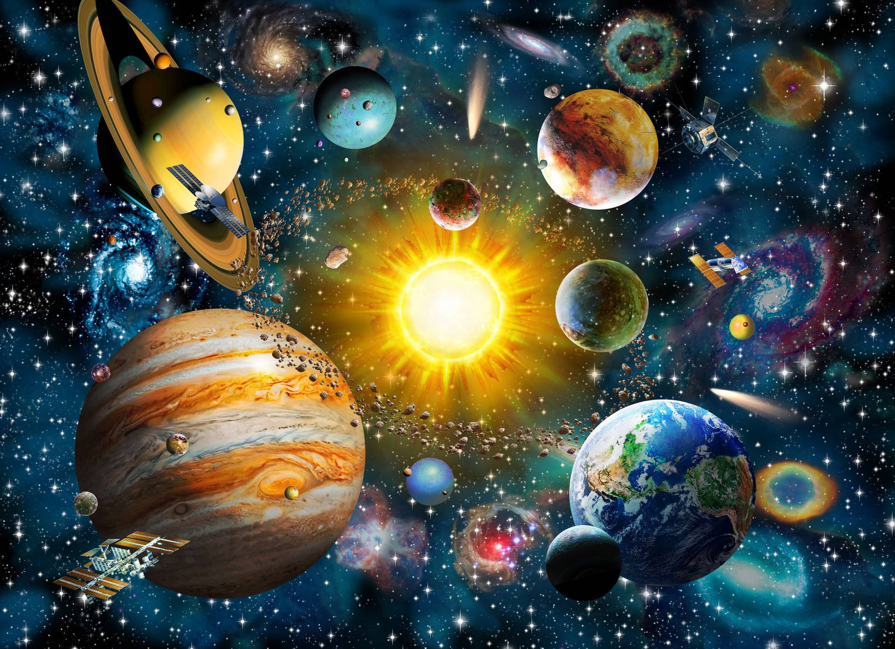

( symbol : ☉ ) is the central star of the solar system . It is almost spherical and contains hot plasma intertwined with the magnetic field . Its diameter is about 1,392,684 kilometers , which is equivalent to 109 times the diameter of the Earth , and its mass is 2 x 10 30 kilograms , which is equivalent to 330,000 times the mass of the Earth , which constitutes 99.86% of the mass.
s for the correct English name , it is (Sun). It was developed from (sunne), which is Old English , and it may be related to the south. Words similar to the English sun appear in other Germanic languages , including Old Frisian . It was called sun. The Latin name for the Sun, not commonly used in everyday English, is also used by astronomers to refer to the length of a solar day for a planet , such as Mars .
The related word solar is the usual adjective term used for the sun, in terms of the solar day , solar eclipse , and solar system.
The correct name in Arabic is sun, which was taken from the Qur’an from the verse:﴿وَسَخَّرَ لَكُمُ اللَّيْلَ وَالنَّهَارَ وَالشَّمْسَ وَالْقَمَرَ وَالنُّجُومُ مُسَخَّرَاتٌ بِأَمْرِهِ إِنَّ فِي ذَلِكَ لَآيَاتٍ لِقَوْمٍ يَعْقِلُونَ ١٢﴾ [النحل:12].
The Sun belongs to the main sequence star type G , and the mass of the Sun constitutes about 99.8632% of the mass of the solar system as a whole. Its shape is almost completely spherical, so that the diameter at the pole differs from the diameter at the equator by only ten kilometers. Since the sun is in a plasma state and not in a solid state, it rotates at a faster speed at the equator than at the poles, and this behavior is known as differential rotation , and this is caused by convection and the movement of mass due to the large temperature gradient from the core to the outside. This mass carries part of the angular momentum in a counterclockwise direction, appearing to be from the north pole of the sun's path , and thus the angular velocity is redistributed .
The Sun belongs to the main sequence star type G , and the mass of the Sun constitutes about 99.8632% of the mass of the solar system as a whole. Its shape is almost completely spherical, so that the diameter at the pole differs from the diameter at the equator by only ten kilometers. Since the sun is in a plasma state and not in a solid state, it rotates at a faster speed at the equator than at the poles, and this behavior is known as differential rotation , and this is caused by convection and the movement of mass due to the large temperature gradient from the core to the outside. This mass carries part of the angular momentum in a counterclockwise direction, appearing to be from the north pole of the sun's path , and thus the angular velocity is redistributed .
The sun is a star rich in minerals. It is possible that the formation of the Sun was triggered by shock waves from one or more nearby supernovae . This model was proposed due to the abundance of heavy metals in the solar system, such as gold and uranium , relative to the availability of heavy metals in other stars. These elements likely arise from atomic stimulation through the absorption of energy that occurs during a supernova explosion , or during nuclear transformation as a result of the absorption of neutrons within the secondary generated star.
The Sun does not have a clear boundary like rocky planets , and the density of gases in the outer parts of the Sun decreases as we move away from the core. However, the internal structure of the Sun is clearly distinct, as will be explained later. The radius of the Sun is measured from the center of the nucleus to the end of the photosphere, which is a layer higher than the nucleus in which the gases are cold and thin so that they radiate large amounts of light, so its surface is easily visible to the naked eye.
The interior of the sun cannot be seen with the eye, and the sun is not permeable to electromagnetic rays . The internal structure of the Sun is studied in a similar way to studying the internal structure of the Earth. In the case of the Earth , seismic waves are used , while in the case of the Sun, compressional waves express the internal structure of the Sun and enable a visualization of its internal structure. Computer simulation is also used as a theoretical method to study the Sun and
Sunlight is the main source of energy on Earth. While the other source of energy is fissile material in the ground, and these fissile materials are the source of geothermal energy through nuclear reactions. The solar constant is defined as the amount of energy provided by the sun per unit area directly exposed to sunlight.
The solar constant for a surface at a distance of one astronomical unit (equivalent to the Earth's distance from the sun) is approximately 1368 watts/meter2 [ The Earth's atmosphere contributes to the attenuation of sunlight, and therefore the power reaching the Earth is close to 1000 watts/meter2 in natural conditions and when.

Solar energy can be harnessed in several natural and artificial ways. The process of photosynthesis captures energy from sunlight and converts it into chemical energy , which is one of the processes that occurs naturally on Earth. The energy of sunlight can be used to generate electrical power by direct heating or converting light into electricity using solar cells .
The energy stored in oil and other types of fossil fuels was primarily sourced from the conversion of solar energy through photosynthesis in ancient times or the distant.